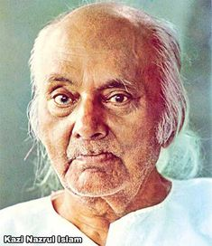

Rebel Poet
Kazi Nazrul Islam was born on 24 May 1899 in Churulia, a village in present-day West Bengal, into a poor Muslim family during the British Raj. His early years were marked by hardship. He worked as a muezzin at a local mosque and learned about poetry, drama, and literature while travelling with theatrical groups. This grounding in performance and verse shaped a writer who always wanted his words to reach ordinary people, not just the educated elite.
Awesome Writer
Kazi Nazrul Islam (May 24, 1899 – August 29, 1976) was a Bangladeshi poet, novelist, and musician who was also the country’s national poet. Nazrul is regarded as one of Bengali literature’s best poets. Nazrul wrote a significant corpus of poetry, music, messages, novels, stories, and other works on topics like equality, justice, anti-imperialism, humanism, resistance to injustice, and religious devotion. Nazrul’s political and social engagement, as well as his poetry “Bidrohi,” which means “the rebel” in Bengali, gained him the moniker “Bidrohi Kobi” (Rebel Poet). His compositions belong to the Nazrul Geeti avant-garde music genre (Music of Nazrul).

"Love has no meaning or amount". -Kazi Nazrul Islam
Awards
1945
Calcutta University
1960
Third-highest civilian award
Conferred the title by the Government of Bangladesh.
1976
highest civilian honors in Bangladesh
Poetry
- Agnibeena (The Fiery Lute, 1922)
- Dolan Chapa (name of a monsoon flower, 1923)
- Bisher Bashi (The Poison Flute, 1924)
- Bhangar Gaan (The Song of Destruction, 1924)
- Chhayanat (The Raga of Chhayanat, 1925)
Poems and Songs
- Dolan Chapa (name of a faintly fragrant monsoon flower), 1923
- Bisher Bashi (The Poison Flute), 1924
- Bhangar Gan (The Song of Destruction), 1924 proscribe in 1924
- Chhayanat (The Raga of Chhayanat), 1925
- Chittanama (On Chittaranjan), 1925